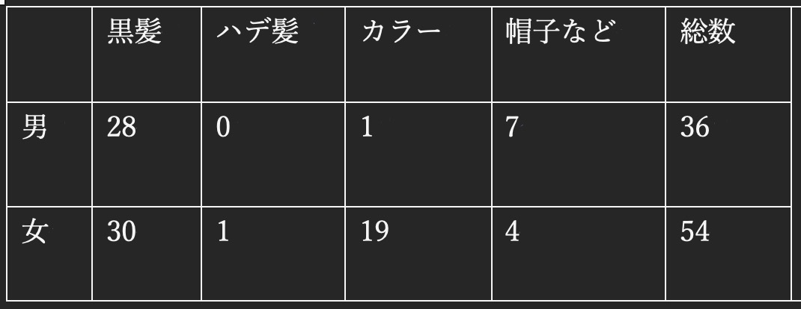

髪の移動観察
・観察項目
男女それぞれで黒髪とカラーとハデ髪と帽子の有無を観察する
・観察結果

- 男性36人 女性54人 合計90人
- 男性は基本的に黒髪で染めている人は非常に少なかった
- 女性も黒髪の方が多く、次いでカラーが多かった
- 男女ともに一定数の帽子をつけている人がいた
・まとめ
みなとみらいで大型ショッピングモールの隣を通るのでもっとカラーやハデ髪の人を見つけられると思っていたが少なかった
カラーでもほとんどの人は茶髪などの落ち着いた色の人しかいなかった
土日などの日の方がもっとたくさんの髪色に出会えると思うので観察は母数が多い時行う方がいいと実感した